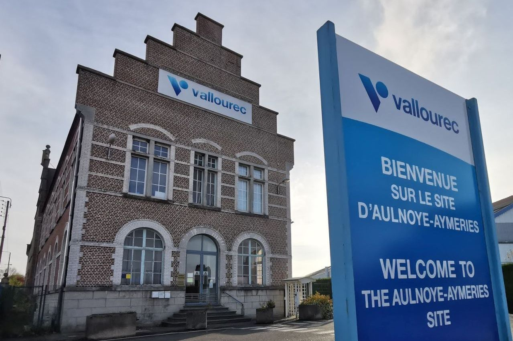
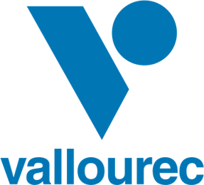

Vallourec
Industrie · Solutions tubulaires
Groupe industriel français, leader mondial des solutions tubulaires premium destinées principalement au secteur de l'énergie et à l'industrie.
Coordonnées
- Site industriel du bassin de la Sambre - Aulnoye-Aymeries (59)
- vallourec.com
Missions
- Concevoir et fabriquer des tubes en acier sans soudure et des raccords.
- Fournir des solutions tubulaires pour le pétrole, le gaz, l'hydrogène et la géothermie.
- Accompagner la transition énergétique de ses clients industriels.
Impact local
Emplois industriels qualifiés, sous-traitance, apprentissage et attractivité économique du territoire Sambre-Avesnois.
Site officiel